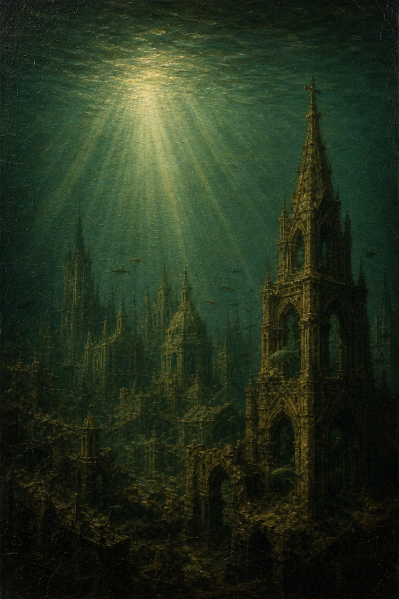
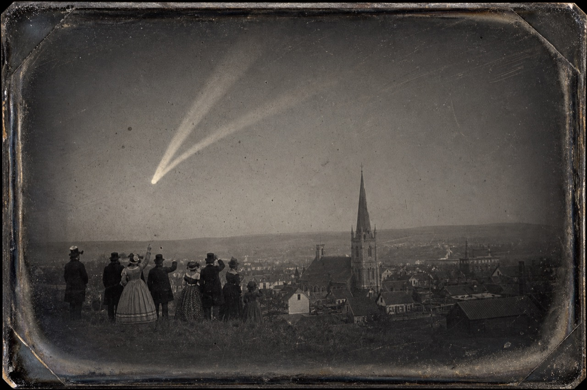
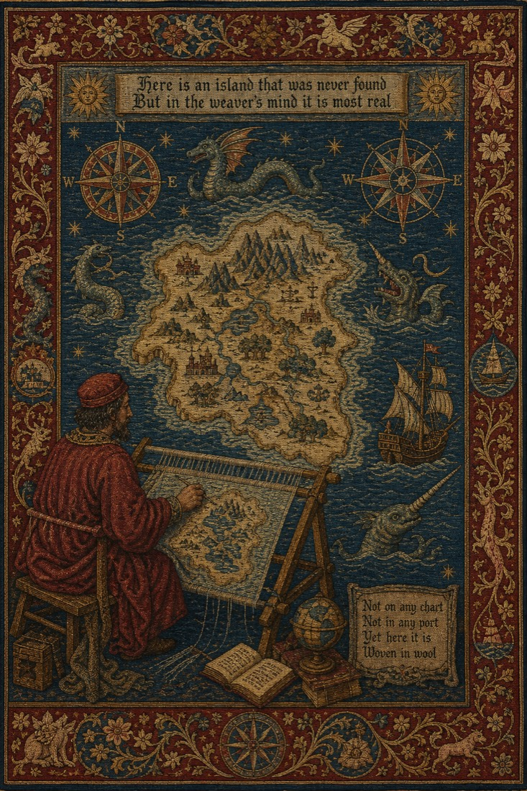
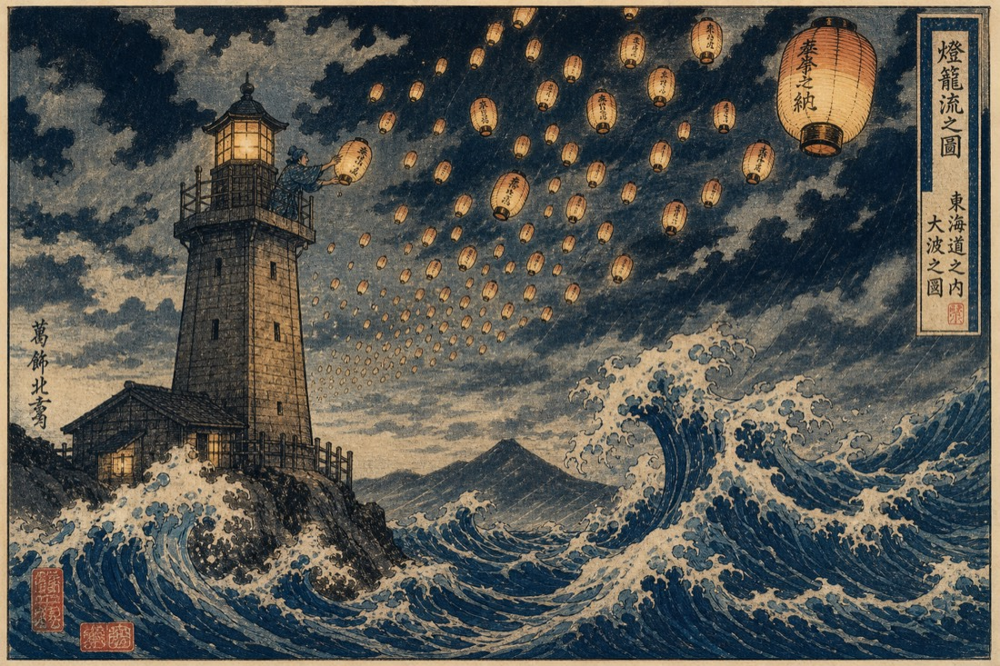
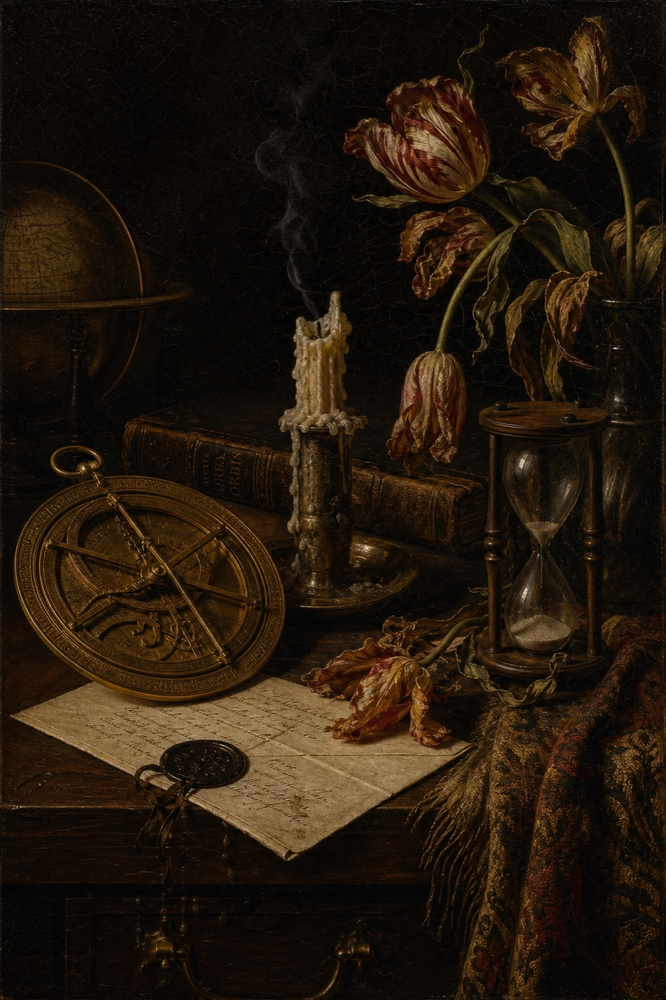
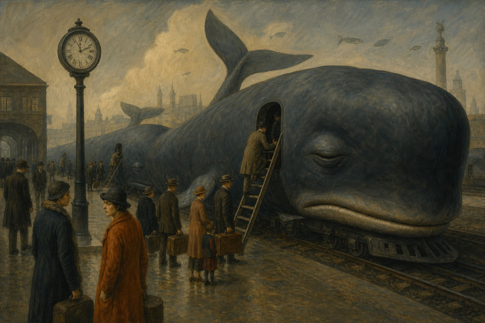
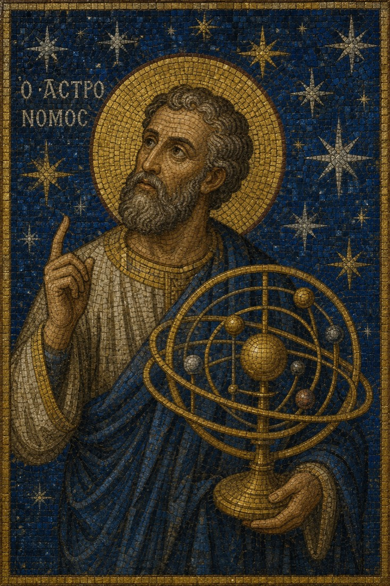
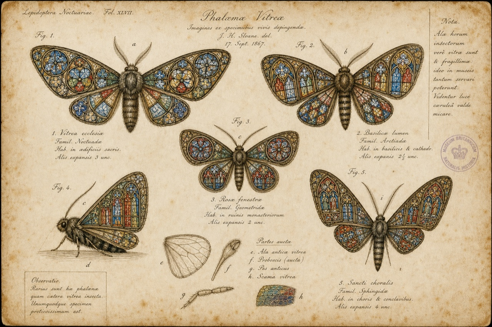

ON LOAN FROM NOWHERE
- Date
- Medium
- Acquisition
EST. NEVER — CONDEMNED SOON — OPEN NOW
Opening Hourswhenever remembered · closed during moments of certainty
FROM THE DIRECTOR'S FOREWORD
Every object in this wing has been rigorously authenticated as never having existed. Our conservators work by candlelight, restoring paintings to conditions they never enjoyed, in centuries that declined to occur.
Visitors are reminded that the collection cannot be stolen. It can only be forgotten, which is worse, and which is why we keep the lights low and the doors unlocked.








VISITOR INFORMATION
Entry is free. The exit charges a small toll of forgetting, collected automatically. Members forget nothing and are miserable.
Do not touch the objects; the objects remember being touched. Photography is permitted but will not come out.
The Musæum stands wherever a building has been demolished and missed. Follow the smell of rain on a street that was renamed.